ImageMagick Examples --
 Image Mapped Effects
Image Mapped Effects
- Index
 ImageMagick Examples Preface and Index
ImageMagick Examples Preface and Index
 Introduction to Image Mapping
Distorting Images using Image Mapping
Absolute Distortion Lookup Maps
Introduction to Image Mapping
Distorting Images using Image Mapping
Absolute Distortion Lookup Maps
- Absolute Distortion Maps
- Absolute Distortion Composition
- No-op Distortion Map Revisited
- Problems with Distortion Maps
- Set Undefined Pixels using a Mask
- Unified Distortion Image
- Hourglass Distortion Map
- Spherical Distortion Map
- Circular Arc Distortion Map
- Polar Distortion Map
Relative Displacement Lookup Maps
- Relative Displacement Maps
- Composite Displace Operator
- Simple Displacement Examples
- Displacement Graphing
- Area Displacement
- Rippled Water Reflections
- 2 Dimensional Displacement Maps
- Cylindrical Displacment
- Fractured Mirror
Variable Blur Mapping
Introduction
As you have seen in the previous sections on Composition, Simple Warping, and Distorting, you can modify images in many different ways. However they all are limited to the specific methods that have been built into ImageMagick. You can even 'roll your own' image distortion using the 'FX' DIY Operator, or directly modify the values of an image using operators such as Evaluate or Function, or even the various Level operators. However distortions take a lot of calculations (and time) to do there task, and if you plan to do the same task against multiple images, having IM repeat all those calculations can be a real waste of time. The other aspect is that it is very hard to limit the effects of the distortion in a free form way. You can't simple edit or modify the distortion that you want to apply. You have limited control. Image Mapping is different. You use an extra 'mapping' image to control what parts of an image is to be modified, and by how much, or in what way. It does not have to modify the whole image, nor does it have to modify the image in some pre-defined or pre-programmed way. You can create a 'map' that can modify an image in ANY posible way, without limitation. You can also edit or further modify the mapping, to adjust or limit its effect, making it more complex, by merging different maps together, or just smooth or blur the effect. And finally you can save the mapping so as to use it again later. It is the 'map' image controls the results. As the modification is 'map' controlled, there is usally very little calculation needed to be performed by ImageMagick, as such 'image mapping' is in general very fast. It is also repeatable, as you can apply the same very complex map, to any number of images, to get the exact same modification. That is to say you can apply it to a whole directory of images very quickly. In essence what Image Mapping does is move the slow, and complex mathematics of a particular effect from a specific image, to a more general 'map' image. once that 'map' is generated it can then be applied to a lot of actual images very quickly.What are Image Maps
Mapping images are basically "Look Up Tables" or LUTs that define how a particular effect sould be applied to an image on an individual pixel by pixel bases. That is wether an effect is applied and to what degree is completely controled by the image map. Essentually an image is an array of values, and what those values mean depends on the mapping process that is being applied. They could indicate...- a direct replacement value (color lookup),
- which image a color should come from (image masking),
- how much a pixel should be lighted or darkened (highlighting),
- specify a the source coordinate (distortion),
- or a location relative to the current position (displacement).
- how much to blur pixels at this location
Distorting Images using Image Mapping
While the various distortion operators described in the previous sections of IM Exampled (such as Simple Image Warping and General Image Distortions), you are restricted to just the various types distortions that have been programmed into the IM graphics library, generally using specific mathematical equations and formulas. However there are times where you want to design your own distortion in a more freeform and less mathematical way. For example to generate a more complex distortion, such a mapping an image into a particular shape, or with a particular complex lens effect, that is easier to draw than to define mathematically. Sometimes you just want to be able to repeat your distortion over a large number of images and avoid having to re-calculate the distortion over and over. The solution is to pre-calculate your distortion, and save it as special look-up table (LUT) in the form of a grayscale image. That is for each output pixel, we look-up the LUT, then use that value to look-up the color from the source image. That is three steps are needed.- Look-up up each destination pixel in the LUT
- Map the LUT value to the source image location (two methods)
- Look-up the color from the source image
Gimp' or 'PhotoShop', giving you the freedom to do
some really fancy and complex distortions.
You must remember however that just like all other distortion methods we have
seen, the lookup is pplied as a Reverse Pixel
Mapping. That is for each pixel in the destination image, we look-up the
color of the pixel from the source image, using the distortion method being
applied. In this case the method is to look-up the source coordinate from the
provided Look-up Table Image.
Now there are two ways of using an image map to determine where in the source image a color shoul dbe looked up... absolute or relative. With absolute coordinate lookup a Distortion Map converts the LUT color value directly into a coordinate in the source image from which to look up the color to use. It does not matter where the color in the LUT is, each color refers to the exact lookup point to use. The distortion LUT images will have a gradient of colors, but any warping or distortion of that graident will achieve the same effect when the map is applied. With relative coordinate lookup a Displacement Map uses the color value to offset the current coordinate to figure out the location in the source image to lookup the color. This means a pure-grey LUT image is used with lighter and darker areas defining how pixels are to be shifted or displaced by the map, regardless of their location in the map. Both methods have advantages and disadvantages, as you will see.
Absolute Distortion Lookup Maps
Creating an Absolute Distortion LUT Map is the simpler of the two methods to both understand, create distortion LUT maps for, and to apply. However, as you will see, it has a very serious drawbacks making them less practical than a Relative Displacement Map. It is the color at any particular point in the 'Distortion Map' directly refers to a location in the source image. That is the greyscale gradient across the 'map' defined the 'texture' that is to be placed at that location. Now consider that the Map image is acually an image of a complex opject such as a tee-shirt, with complex folds and ripples. If that shirt has a gradient across it, you can map any flat image onto that shirt. That is the power of an absolute distortion map. Any 'black' pixel in the LUT image (color value 0) will be thought of as the left-most pixel or '0' X coordinate of the source image, while
anything that is 'white' in the LUT (value 1), is to be thought of as the
right-most pixel (the width of the source image).
Note that this LUT will only look-up the X or horizontal position of color in
the source image. It will not change the height or Y positions of colors.
So lets try this with a simple plain gray-scale horizontal gradient for the
LUT.
Note that this did not make any real changes in mapping the source image to
the destination image. That is because the X coordinate that we looked up from
the distortion map, was the same position we were looking up the color for.
By simply flipping the gradient over the look-up of the pixels is also
flipped, creating a mirror image. That is white is on the left and 'black' is
on the right, and a horizontal gradient across the image.
![[IM Output]](distort_noop.gif)
{kind=link}
magick koala.gif \( -size 75x75 gradient: -rotate -90 \) \
-fx 'p{v*w,j}' distort_mirror_x.gif
|
![[IM Output]](../images/koala.gif)
![[IM Output]](map_gradient-x.gif)
![[IM Output]](distort_mirror_x.gif)
magick -size 75x75 gradient: -rotate 90 \
-sigmoidal-contrast 8,50% map_compress.gif
magick koala.gif map_compress.gif -fx 'p{v*w,j}' distort_compress.gif
|
{kind=link}
{kind=link}
magick map_compress.gif -rotate 90 map_compress_y.gif
magick koala.gif map_compress.gif map_compress_y.gif \
-fx 'p{u[1]*w,u[2]*h}' distort_compress_2D.gif
|
{kind=link}
{kind=link}
Composite 'Distort' Method
So far we have been using FX, General DIY Operator to apply absolute distortion maps. This provides a way to exactly taylor and tweek exactly what you are doing but is also very slow. The Composition Operator "Distort" encodes a very similar formula we have been using
above. Though it has been implemented in a way that also makes it a little
more compatible with the "Displace" composition operator that we
will look at later in Relative Displacement
Maps.
So lets repeat the last 'implode' example using a "Distort"
composition.
magick koala.gif map_compress.gif map_compress_y.gif \
-compose Distort -define compose:args=37.5x37.5 -composite \
distort_compose.gif
|
{kind=link}
compose:args" in the above. This value is a multiplyer against
the LUT gradient that is used (centered on a perfect gray). The value used
'37.5' in the is half the width and height of the image (75
pixels). You can change that multiplier to expand or contract the overall
scale of the distortion.
If the "compose:args" values are NOT defined, it will default to
the correct values. If the value is set to zero, no distortion will be
applied in that direction.
If you wanted to set the composition arguments automatically you can use the
following equivelent Set "option:" method
to calculate it...
|
![[IM Output]](distort_compose_set.gif)
|
| 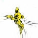 |
{kind=link}
No-op Distortion Map
Before we get any further I would like to just step back a moment a have another look at the the 'noop' example above. This actually will blur the image slightly, as the formula as I have outlined is actually not exactly correct. Getting the 'no-op' copy of the original is a good test that you have the mathematics of your distortion correct.That is when given a perfect gradient, you can map each pixel from the source image to the destination image. That is the LUT 'white' (or 1.0) value will map exact to right-most (or bottom-most) pixel in the destination.
For testing no-op distortions we use a 'pixel checks image' (EG: "pattern:gray50") as it will show up any distortion, and thus any
problem in the applied mathematics used.
So lets try to apply a no-op distortion to the methods we have so far used...
| 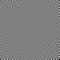 |
{kind=link}
| 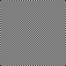 |
{kind=link}
The FX distortion is centered on the upper right corner (pixel location
0,0), and generates duplicate virtual pixels along the bottom and right
edges. That is because it makes no attempt to change center of the scaling,
from lookup color, to image coordinates used for the actual lookup. As such
black pixels remain centered at pixel 0,0, even though the scaling is wrong.
The compose "Distort" operator translates the coordinates so
zero is in the center of the image, before the scaling is applied. It does
this as part of the scaling for 'displacement maps' (see later). As such
the inaccurate scaling pulls the edges of the image inward by 1/2 a pixel
along each edge, while leaving the center of the image correct.
|
| 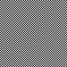 |
{kind=link}
|
![[IM Output]](distort_compose_check_correct.gif)
|
compose:args", if
undefined, uses the correct scaling values.
|
![[IM Output]](distort_compose_default_check.gif)
|
Problems with Distortion Maps
Lets continue with out image distorting by attempting a rotation. For this generating the rotated map can be a little tricky, but can be done...
magick -size 75x75 gradient: -background black -rotate 45 \
-gravity center -crop 75x75+0+0 +repage map_rot45_x.png
magick map_rot45_x.png -rotate 90 map_rot45_y.png
magick koala.gif map_rot45_x.png map_rot45_y.png \
-compose Distort -composite distort_rot45.gif
|
{kind=link}
![[IM Output]](map_rot45_y.png)
![[IM Output]](distort_rot45.gif)
magick -size 100x20 xc:white xc:black -size 115x75 gradient: \
+swap -append -rotate 45 \
-gravity center -crop 75x75+0+0 +repage map_rot45b_x.png
magick map_rot45b_x.png -rotate 90 map_rot45b_y.png
magick koala.gif map_rot45b_x.png map_rot45b_y.png \
-compose Distort -composite distort_rot45_better.png
|
{kind=link}
{kind=link}
![[IM Output]](distort_rot45_better.png)
Set Undefined Pixels using a Mask
A more general way of solving the 'undefined pixel' problem is to define a map of what pixels are actually a valid defined result in the distortion. In other words a masking image. For example...
magick -size 75x75 xc:white -background black -rotate 45 \
-gravity center -crop 75x75+0+0 +repage map_rot45b_m.png
magick distort_rot45_better.png map_rot45b_m.png \
-alpha off -compose CopyOpacity -composite distort_rot45_masked.png
|
![[IM Output]](map_rot45b_m.png)
{kind=link}
Unified Distortion Image
You may however have noticed that all three maps are all grey scale images. This means it is quite reasonable to merge all the maps into a single distortion map image. For example, lets map the 'X distortion map' to the 'red'
channel, the 'Y map' to the 'green', and the mask to the
'alpha' or transparency channel, which makes it easier to handle.
magick map_rot45b_x.png map_rot45b_y.png \( map_rot45b_m.png -negate \) \
-alpha off -channel RGA -background black -combine map_rot45u.png
|
![[IM Output]](map_rot45u.png)
The 'blue' channel in the Combined Channel Image is not defined, so takes its value from the
current "-background" color, which I preset to 'black'
or a value of zero in the above.
|
magick koala.gif -alpha set map_rot45u.png \
\( -clone 0,1 -fx 'p{v.r*w,v.g*h}' \
+clone -compose Dst_In -composite \) -delete 0,1 \
distort_rot45_unified.png
|
{kind=link}
|
![[IM Output]](distort_rot45_compose.gif)
|
blue) in the 'unified
distortion map' image. One logical use for it is as a means to add highlights
and shadows to the distorted image. (See Overlay highlights).
You can see this technique taken one step further in the Spherical Distortion Map example below.
Hourglass Distortion Map
Now I wanted an one dimensional distortion map, that scaled each row of the image differently based on that rows height. Sort of producing a real carnival fun house mirror distortion that makes fat people look very thin. In other words a sort of hourglass distortion. This is quite a complex LUT image, and after a lot of fiddling I came up with the following expression to generate the height variable, but horizontally linear gradient map.
|
![[IM Output]](map_hourglass.png)
|
When generating gray-scale gradients, you can make the -fx operator 3 times
faster, simply by asking it to only generate one color channel only, such as
the 'G' or green channel in the above example. This channel
can then be Separated to form the
required gray-scale image. This can represent a very large speed boost,
especially when using a very complex "-fx" formula.
|
sc' is the scaling factor for the hourglass (value ranges
from 0 to 0.5), and allows you to adjust the magnitude of the distortion.
Now lets apply this map to the built-in "rose:" image.
Note that the 100x100 pixel map does not match the 70x46 pixel image. This
complicates things, as we will need to scale the current pixel in the source
image by the appropriate amount to match the distortion map we give, to look-up
the location of that pixels color.
|
{kind=link}
i' is
multiplied by the width of the distortion map image 'v.w', and
divided by the original images width 'w', to produce
'i*v.w/w. The same thing happens for the pixels Y coordinate,
'j*v.h/h'. This re-scales the pixel coordinate in the
destination image to match the distortion LUT image. The looked up coordinate
is then scaled by multiplying the LUT value with the source images width, to
become the X coordinate for the color look-up.
If you have both an X and a Y distortion map, then you will have to repeat the
scaled look-up for the Y map.
Of course we have the same 'edge' distortions we saw previously, so lets
change the Virtual Pixel Setting to
transparency.
|
{kind=link}
-channel" setting to ensure that "-fx" will work with and return alpha
channel (transparent) values from the source image. Specifically the
transparent virtual pixels.
Also note that when looking up the distortion map we ony looked up from the
green channel (using 'v.p{}.g'). If this is not done, the same
channel as being process from the source image will be used, and for the map
'alpha' is not defined.
This distortion map could be made even better by using a non-linear gradient
so the image remains rectangular, with more distortion at the edges than in
the middle, to give it a more 'rounded' or 'cylindrical' look.
Anyone like to give this a go? Mail Me
Spherical Distortion Map
In the previous Hourglass Distortion Map example, I generated a gradient which was horizontally scaled by a cosine curve. With a little more work you can generate a spherical shape instead...
|
![[IM Output]](sphere_lut.png)
|
|
![[IM Output]](sphere_mask.png)
|
| 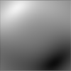 |
{kind=link}
magick lena_orig.png -resize 100x100 sphere_lut.png -fx 'p{ v*w, j }' \
sphere_overlay.png -compose HardLight -composite \
sphere_mask.png -alpha off -compose CopyOpacity -composite \
sphere_lena.png
|
![[IM Output]](../img_photos/lena_orig.png)
{kind=link}
|
![[IM Output]](spherical_unified.png)
|
magick mandrill_grid_sm.jpg spherical_unified.png \
\( -clone 0,1 -alpha set -compose Distort -composite \) \
\( -clone 1 -channel B -separate +channel \) \
\( -clone 2,3 -compose HardLight -composite \) \
\( -clone 4,1 -compose DstIn -composite \) \
-delete 0--2 spherical_mandrill.png
|
![[IM Output]](../img_photos/mandrill_grid_sm.jpg)
![[IM Output]](spherical_mandrill.png)
- we apply the distortion map (which includes the mask)
- extract the shading map from the unified image map
- apply the shading map to the distorted image
- restore the mask lost from the shading operation
- delete all but the final image and save it
Circular Arc Distortion Map
Just to show just what is really possible by using positional distortion maps, here is an absolute distortion LUT, similar to what is provided by the 'Arc' Distortion Method above. Basically instead of calculating the coordinate mappings for each and every pixel in each and every image being distorted, we save those calculated coordinates into the two X and Y coordinate gray-scale LUT maps. That is we pre-calculate the whole distortion into a simpler look-up table image, allowing it to be applied over, and over, and over, without needing further square roots or trigonometric functions.
magick -pointsize 30 -font Candice label:Anthony -trim +repage \
-gravity center -resize 95x95 -crop 100x100+0+0\! \
-flatten text_image.jpg
magick -size 100x100 xc: -channel G -fx 'atan(j/(i+.5))*2/pi' \
-separate -flip -flop map_p_angle.png
magick -size 100x100 xc: -channel G -fx '1-hypot(i,j)/(w*1.6)' \
-separate -transverse map_p_radius.png
magick text_image.jpg map_p_angle.png map_p_radius.png \
-fx 'p{u[1]*w,u[2]*h}' distort_p_curved.jpg
|
|
Color Source |
|
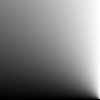
Angle - X Map |
|
![[IM Output]](map_p_radius.png)
Radius - Y Map |
|
![[IM Output]](distort_p_curved.jpg)
Curved Text |
{kind=link}
{kind=link}
Gimp" ), you can then reuse it on a huge number of images.
Polar Distortion Map
Sometimes you may need the destination image to be defined by the distortion map, rather than the source image, just to make things work correctly. For example, if we want to map some text into a circle (also known as a polar transform), you really need to be able to use an image that is about 3 to 4 times long than it is high (high aspect ratio) or the result will not be very readable. To do that we place the distortion map images before the color source image, so that the first (X map) image will be used to set the size of the final result, rather than the input source image.
magick -size 100x100 xc: -channel G \
-fx 'atan2(i-w/2,h/2-j)/pi/2 + .5' \
-separate map_p_angular.png
magick -size 100x100 xc: -channel G \
-fx 'rr=hypot(i-w/2,j-h/2); (.5-rr/70)*1.2+.5' \
-separate map_p_radial.png
magick -font Candice -gravity center -size 200x50 \
label:'Around the World' text.jpg
magick map_p_angular.png map_p_radial.png text.jpg \
-fx 'u[2].p{ u*u[2].w, v*u[2].h }' distort_p_circle.jpg
|
|
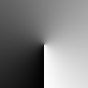
Angular - X Map |
|
![[IM Output]](map_p_radial.png)
Radial - Y Map |
|
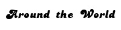
Color Source |
|
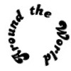
Circled Text |
{kind=link}
{kind=link}
{kind=link}
70' controls the final
size of the circle, along which the mid-line is placed. The
'1.2' value on the other hand controls the vertical scaling of
the image into the circle, allowing you to adjust the height of the distorted
text.
Remember this "-fx"
expression requires the distortion maps to be given first, and the color
source to be given as the third (index 2) image. However this will also
mean that any meta-data that is stored in the source image will also be
lost.
|
| The problem with this distortion map is that there is a very sharp disjunction of colors in the 'X map' (caused by an asymptote in the mathematics). This line must remain sharp when you do any color look-up, or resizing of the map, to produce a larger image. That is you will need to ensure that any resize or interpolated look-up of this map does not produce a grey look-up color along that asymptotic line. If you do generate grey look-ups along this line, you will get a line of colored pixels (looked up from the middle of the image) in your final result. Because of this it is recommend you always generate this distortion map at the size you need for the final image, and never use any scaling technique previously shown. |
You can use this for other effects too, like a circular checkerboard...
| 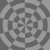 |
{kind=link}
The above clearly shows the limits of image distortions using "-fx". Near center of the
image, the radial lines are becoming aliased as pixel merging of a large
areas into a single pixel does not take place. On the other hand the edges
of the image, particularly the corners, show an appropriate blurring the
radial lines.
The cause is that "-fx"
(and most older distortion methods) only so simple unscaled interpolated
look-ups of the colors in the source image. This means that as the image
scales smaller the source image pixels are not merged together to produce
the correct color for the destination pixel.
This is not a problem for areas of enlargement (as in the corners) only of
extreme compression (center). As such one solution is the use of Super Sampling, but all this does is postpone the
problems to a higher level of compression.
|
| The same asymptotic line (sudden change) in the distortion map (center to bottom of image) also produces a sharp color change along that line in the above example. Compare that line with the other radial lines (like to the from center to the top of the image) which get very fuzzy as it approces the edge of the image due to interpolated look-up previously noted. This may be a problem when generating a circular pattern with a tileable image (such as the above), and may require some special handling to avoid visible differences in that part of the image. To avoid this it may be better to distort the top half of the image separately to the bottom half so as to avoid the asymptotic region. |
Shuffling Rows
In this example we do something a little more unusual... Shuffling the rows of an image at random. First we create a map, that has a gradient for X (red channel), a random noise image for the Y (green channel).
magick rose: \
\( -size 46x70 gradient: -rotate -90 \) \
\( -size 1x46 gradient: -spread 23 -scale 70x46\! \) \
-compose Distort -define compose:args='' -composite \
rose_row_shuffle.png
|
-spread"
seems to include virtual pixels in its selection of pixels to swap, and means
some rows become duplicates, while others are lost completely. In otherwords
the 'shuffle' imagemap is not quite right.
Do you have a better solution to shuffling pixels?
Relative Lookup Displacement Maps
As you can see creating a Absolute Distortion Map is reasonably easy to create and use. However it has a serious problem when a distortion has 'undefined' regions, or areas where the distortion goes 'outside' the normal bounds of the source image. A more serious problem is that you are always dealing with gradents, which define the absolute coordinates for the color lookup. No part of the mapping image is simple, or clean, or easy to modify or edit by hand. Special techniques and mathematics is needed in there creation and use. That that generally means there is very little in the way of 'artistic' development involved. There is however another method of using a Lookup Table, to specify the coordinates in which to get the final color. By using a Relative Displacement Map. Instead of the 'map' defining the exact coordinate in which to lookup each pixels color from the source image, it instead defines an offset or displacement relative to the current position. Now an offset could be a positive or negative value, and a negative value requires a little trickiness to encode into a color value. So what they do is define 'pure gray' and being a 0 displacement of the coordinate (no change). They then make 'black' mean a maximum negative displacement, and 'white' to mean a maximum positive displacement. This can be hard to describe so lets look at an example. First we create a test image to 'displace'.
|
{kind=link}
|
![[IM Output]](displace_map.jpg)
|
|
![[IM Output]](displaced.jpg)
|
10' in the above example is
very important, and is the maximum relative distance any part of the source
image appears to move, for a 'pure white' or 'pure black' displacement value
in the mapping image. You can not displace the lookup, and thus the input
image anything further than this value.
Other shades of gray between the maximum white or black values and the central
no-displacement 50% gray value, will displace the lookup by an appropriate
amount. As such a 25% gray value will displace the lookup by 1/2 the
displacement value in the negative direction, while a 75% gray will displace
by 1/2 that value in the positive direction.
This value is a key difference between a Absolute
Distortion Map and Relative Displacement
Map. You can increase or decrease the relative displacements, making the
image more or less distorted, simply by changing the displacement value,
without needing to change the displacement map at all.
Also as a 'zero-displacement' map is just a solid 50% or pure gray, and not a
complex gradient, you can start with a simple gray image, and artistically
lighten or darken areas to generate the desired displacements. You can do
this simply by drawing shapes or areas, rather then needing a complex
and exact mathematical formula.
And finally as all the displacements are relative, wild values such as
produced by edge-effects does not produce wild or random pixel colors. In
fact as you will see smoothing or blurring Displacement Maps is actually a good thing as it removes the disjoint or
discontinuous 'cutting' effect you can see in the above example.
In summary A displacement map are much more controllable, and artistic,
providing localized displacements without the need for complex and exacting
mathematics, and are very forgiving with regard to mistakes, edge effects, or
even displacement map blurring.
It is ideal for simple 'displacement' type distortions such as when generating
effects such as water, waves, distorting mirrors, the bending of light,
lens-like effects, or frosted or bubbles glass effects.
On the other hand highly mathematical distortions such as 'polar', rotational,
and 'perspective' distortions, or other real-world 3-d type mappings, are not
easily achieved. That is not to say it is impossible, as later we will show
that you can in fact magick between the two styles of maps, just more
difficult.
Composite Displacement Method
We have used DIY FX Operator was used to do the displacement mapping, so you can see what is actually being done. But it is a slow technique. But their is an equivelent built-in Composition Operator, "Displace".
Here is how you you use it...
magick {image} {displacement_map} \
-compose Displace -define compose:args={X}x{Y} \
-composite {result+}
magick {image} {displacement_map} \
-compose Displace -set option:compose:args {X}x{Y} \
-composite {result+}
magick composite {displacement_map} {image} \
-displace {X}x{Y} {result+}
|
Note the order, expecially in the "magick composite" command.
-set" instead of define also allows you to use Percent Escapes in the argument.
The 'X' and 'Y' values define the direction and 'maximum
displacement' that will be used for 'white' and 'black' colors in the given
displacement map. You can define either one, or both values, so as to allow
you to displace in any particular direction.
That is normally displacement maps provide a linear displacement in some
random direction with a maximum intensity controlled by the 'X' and
'Y' values. The 'map image' then sets how much of that maximum is
applied from a negatative maximum (black) to a positive maximum (white), with
a perfect gray meaning no displacement of the lookup for that pixel.
For example here is the same Y displacement example we had above...
| 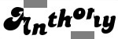 |
{kind=link}
-geometry" and "-gravity" settings, to adjust
the area the displacement map is overlayed on the image. The pixel look up
resulting from the displacement map can still reference areas outside the
overlaid part of the image, duplicating them inot the overlayed area.
Simple Displacement Examples
A displacement map of raw areas of colors, without any smooth transition will generaly produce disjoint (discontinuous) displacements between the different areas in the resulting image, just as you saw above. You can in fact produce a displacement map that 'fractures' as if you were looking into a cracked mirror, using this technique. For example see the Fractured Mirror below. You can produce nicer and smoother results if the colors smoothly flowed from one area to another. For example, by bluring the displacement map you generate a wave like transtion between the displaced areas...
|
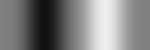
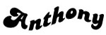 |
{kind=link}
{kind=link}
|
![[IM Output]](displaced_wave_x.jpg)
|
|
![[IM Output]](displaced_wave_xy.jpg)
|
|
![[IM Output]](dismap_copy.jpg)
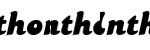 |
{kind=link}
|
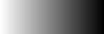
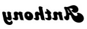 |
{kind=link}
{kind=link}
|
![[IM Output]](displaced_shrink.jpg)
|
{kind=link}
|
![[IM Output]](displaced_resized.jpg)
|
sinc() function (
which is defined as 'sin(x)/x'), and graph that gradient by
using it as a displacement map...
magick -size 121x100 xc: -fx 'sin(i*24/w-12)/(i*24/w-12)/1.3+.2' \
gradient_sinc.gif
magick -size 121x100 xc: -draw 'line 0,50 120,50' graph_source.gif
magick graph_source.gif gradient_sinc.gif \
-compose Displace -define compose:args=0x49 -composite \
displace_graph.gif
|
{kind=link}
{kind=link}
![[IM Output]](displace_graph.gif)
| 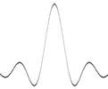 |
{kind=link}
| 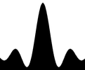 |
{kind=link}
Area Displacement (Linear)
Lets try a more logical displacement problem. Moving an area of an image in a straight line from one location to another. As we have seen a 'pure gray' image will not cause any displacement, while a 'white' color will cause a positive lookup displacement from the source image. For example lets create such an image....
|
![[IM Output]](dismap_spot.jpg)
|
10x10'...
magick koala.gif dismap_spot.jpg \
-compose Displace -define compose:args=10x10 -composite \
displace_spot.png
|
{kind=link}
+10,+10 pixels to the South-East. Basically a
image of the koala's 'tail'. In other words, within the circle the image was
displaced North-East, or -10,-10 pixels.
Remember the displacement is of the lookup, so the source image is shifted by
a negative amount due to the Reversed Pixel
Mapping. The image displaces in the reverse direction!
Note also that it is the image within the area marked that is moved. You are
not displacing the image marked, but displacing the image INTO the area
marked.
And finally note the sharp discontinuity at the edges of the circle. Areas
inside the marked area are moved, while the areas outside remain exactly as
they were.
These are the facts, so it is worth repeating.
Only the areas marked not gray will be displaced.
Sharp color changes produce sharp image discontinuities.
32,22', to the center
of our white (full positive displacement) circle at '37,37'.
That needs a displacement value of '-5,-15' (remeber it is
a reversed direction)...
| 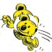 |
{kind=link}
|
![[IM Output]](dismap_area.jpg)
|
| 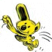 |
{kind=link}
+5,+15 into the 'fuzzy'
area, but this time the border of the area is smoother and connected to the
rest of the image.
Of course the ears on the edge of the circle was distorted by the fuzzy edge,
and the body of the koala compressed as well, but it is still a lot better
than what we had before.
To prevent the 'tearing' of the image you see on the trailing side, or leaving
copies of the displaced part, you want to expand that spot, or make a more
complex gradient type of displacement image.
For example suppose you want to move the koalas head from its starting position
at '32,22', to the center of the image at '37,37',
or a movement of +5,+15 pixels, but you want to adjust the whole
image to this change, to give a much smoother effect.
To do this you will want the maximum displacement of black (a positive image
displacement) at '37,37' and displacing by a value of
+5,+15. but you also want the make sure the rest of the image
remains intact by 'pinning' the corners at 50% gray. That is perfect for a Shepard's Interpolated Sparse Gradient.
magick -size 75x75 xc: -sparse-color Shepards \
'37,37 black 0,0 gray50 74,74 gray50 0,74 gray50 74,0 gray50' \
dismap_move.jpg
magick koala.gif dismap_move.jpg \
-compose Displace -define compose:args=5x15 -composite \
displace_move.png
|
![[IM Output]](dismap_move.jpg)
![[IM Output]](displace_move.png)
shapemorph', but with some animation.
In summary: For small localized displacements a 'blurred spot' displacements
can be used. But for larger displacements over a longer distance, a larger
smooth gradient displacement map should be used to prevent tearing or
duplicating the source image.

Simple Displacement Morphing
Modifying the Size of Displacement Vectors
Two Image Morphing
Random 1D Displacements
Rippled Water Reflections
As mentioned before displacement maps are especially useful for generating water and glass like distortions. For this example I generated a small image by Cropping a flower image. Now I want to make it look like it is sitting on some rippled water. To generate ripples, I need a sine wave gradient of the same size which I can generate using the Evaluate Sin Function. The number '{kind=link}
8' represents the number of 'waves'
that will be added to the gradient.
| 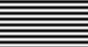 |
{kind=link}
|
![[IM Output]](flower_waves.png)
|
Now that does not seem very interesting, but what if you flip that image
compress it vertically and append it to the original...
|
![[IM Output]](flower_waves_2.png)
|
|
![[IM Output]](waves_decreasing.png)
|
So lets apply this gradient, to form a new reflection of the flower. I also
darkened the reflected image slightly to represent some light being lost into
the water itself, making it seem more like a water reflection.
| 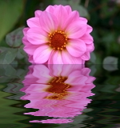 |
{kind=link}
Future Animated Ripples - Using -function Sinusoid with phase changing
2-Dimensional Displacement Mapping
So far all the relative displacement maps have only displace the image in one direction only. Though that direction can be set to any angle desired by setting the appropriate 'XxY' displacement value or
'vector'.
However you can produce a much more complex displacement where the image is
displaced in any direction by any amount, by using two separate displacement.
To do this we need to create two displacement maps, one for each of the X and
Y directions separately.
Here are the commands you can use...
magick {image} {X displacement} {Y displacement} \
-compose Displace -define compose:args={X}x{Y} \
-composite {result+}
magick {image} {X displacement} {Y displacement} \
-compose Displace -set option:compose:args {X}x{Y} \
-composite {result+}
composite {X displacement} {image} {Y displacement} \
-displace {X}x{Y} {result+}
|
magick composite" command. the wierd
ording is caused by the need to abuse the "magick composite" option
handling, as well as historical reasons. It is vital you get this correct.
Because of this I recommend you use the "magick" command, rather
than "magick composite".
| Before IM v6.4.4 using 2 separate displacement maps for separate X and Y displacements was a hit or miss affair. It sometimes worked, and sometimes did not. It is not recommended to attempt to even try to use it on IM's older than this version. |
Internally both "magick" and "magick composite' actually
merge the two images (if provided) so as to generate a 'unified displacement
map', before passing that to the internal API.
This does not effect the previous 'linear displacements' we looked and
previously as the displacement map given was a greyscale image, so both
'red' and 'green' channels were identical.
|
Cylindrical Displacement
Something that has come up a number of times in the IM forums is a way of mapping an image onto a cylinder, such as to overlay it on a coffee mug, or a soft drink can. This is the solution...
|
![[IM Output]](rose_cylinder.png)
|
- Load the "rose" image and add some space for the vertical displacement
- Create a horizontal mathematical gradient for later mathematical functions
- magick a copy of the gradient to generate a compressing displacement map
- magick another copy to a vertical elliptical arc displacement
- remove the linear gradient
- prepare and do the displacement
cylinderize" script by Fred Wienhaus.
Fractured Mirror
You can create a 'fractured mirror' look to an image by generating random areas of X and Y displacements.
|
![[IM Output]](mirror_areas.gif)
|
![[IM Output]](../images/dragon_sm.gif)
![[IM Output]](mirror_dismap_y.gif)
| |
| 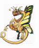 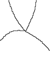 |
|
{kind=link}
{kind=link}
{kind=link}
{kind=link}
| Technically I did not have to separate the 'red' and 'green' channels in colored random displacement map that was generated. I could have used them directly as X displacement is looked up from the 'red' channel, and Y displacement is looked up from the 'green' channel. That is I could have used the "mirror_areas.gif" image directly as a "unified displacement map". |
Shepards Displacement
Random Displacements
Lensing Effects
Frosted Glass Effects
Dispersion Effects (rotated displacements)
Dispersion Effects with Randomized Displacement
FUTURE: Other possible distort / displace mapping examples- Raytrace a gradient onto 3D objects so that later ANY image can be
be mapped onto those objects.
- X and Y gradient mapped images
- Pure Gray Image for color, highlights and shading
Variable Blur Mapping
Added to ImageMagick version 6.5.4-0, the "-compose" method
'Blur' provides you with a method of replacing each individual
pixel by an Elliptical Gaussian Average (a blur) of the neighbouring pixels,
according to a mapping image.
magick composite -blur {Xscale}[x{Yscale}[+{angle}]] blur_map image result
magick image blur_map \
-define compose:args='{Xscale}[x{Yscale}[+{angle}]]' \
-compose blur -composite result
magick image blur_map \
-set option:compose:args '{Xscale}[x{Yscale}[+{angle}]]' \
-compose blur -composite result
|
Note that this Image Composition requires the use of an operational argument, which can be set in a number of ways. See Globally Defined Artifacts for more details. By using a variable map to control the blur you can blur one part of an image, while leaving another part completely alone, or you can produce effects such as Tilt-Shift Effect, where a real world image is made to appear more like a small artifical model.
For example, here I blur one half of an image of a koala while leaving the other half completely un-blurred...
magick -size 37x75 xc:black -size 38x75 xc:white +append blur_map_bool.gif
magick koala.gif blur_map_bool.gif \
-compose blur -define compose:args=3 -composite \
blur_koala_bool.gif
|
![[IM Output]](blur_map_bool.gif)
{kind=link}
magick -size 75x75 gradient:black-white blur_map_gradient.gif
magick koala.gif blur_map_gradient.gif \
-compose blur -define compose:args=3 -composite \
blur_koala_gradient.gif
|
![[IM Output]](blur_map_gradient.gif)
{kind=link}
magick blur_map_bool.gif blur_map_gradient.gif \
-compose blur -define compose:args=15 -composite \
blur_edge_gradient.gif
|
![[IM Output]](blur_edge_gradient.gif)
Elliptical Blurring
The 'Blur' compose setting uses a different technique to the
normal Blur or Gaussian Blur Operators, as it
is implemented by using a Gaussian Elliptical Area Resampling algorithm that was developed for scaled image
resampling as part of Generalized Distortion
Operator.
The elliptical area used for the neighbourhood resampling, also makes this
method of blurring more versitile than a normal uniform 'circluar' blur
provided by the operators "-blur" and "-gaussian-blur". The ellipse itself is defined by the
'width', 'height' of the sigma for the blurred area. The ellipse
can also be rotated from an orthogonal alignment by the given 'angle'
(clock-wise).
For example in the following diagram we show how the blurred color of a single
pixel will get its color from a rotated elliptical area, based on the given
sigma values. The pixels in this area are then weighted averaged together
according to a Gaussian Filter (using
an elliptical distance formula, to produce the blurred color.
magick koala.gif -compose blur -define compose:args=5x1-30 -composite \) \
elliptical_blur.gif
# ... other commands to create diagram of blur effect ...
|
{kind=link}
As an example of the elliptical controls available for variable blur mapping,
lets use a black dot using the same gradient blur map we used before. But this
time we will scale a long thin horizontal ellipse '30x0', rather
than a circle. The 'x0' may seem weird but basically means no vertical
blurring should be seen, just an ellipse of smallest height needed to generate
a good result.
magick -size 75x75 xc: -draw 'circle 36,36 36,8' black_circle.gif
magick black_circle.gif blur_map_gradient.gif \
-compose blur -define compose:args=15x0 -composite \
blur_horizontal.gif
|
![[IM Output]](black_circle.gif)
![[IM Output]](blur_horizontal.gif)
|
![[IM Output]](blur_vertical.gif)
|
|
![[IM Output]](blur_angle.gif)
|
Note that using long thin ellipses like this is actually a lot faster that
using a single large circle. In fact the "-blur" operator gets its speed by
using two separate horizontal and vertical blurs, where as the "-gaussian" blur operator does
a full 2 dimensional convolution in
a simpler way to the 'Blur' composition method just described.
|
Blur with Variable Aspect Ratio
So far the we have varied the size of the elliptical area used for the blur using 'blur map'. However the while the size of the ellipse and even its angle can be rotated, it shape and angle remains fixed. Now the 'blur map' is an image that is composed of three color channels: red, green, and blue. As we used a grey-scale image all three color channels had the same values. However internally the width of the ellipse is scaled by just the red channel value, while the height is scaled by the green channel value. Any effect of the blue channel value is typically ignored except in a special case which we will look at later. This means the elliptical shape or its 'aspect ratio' can be varied by using different maps for the individual red and green channels. As with a normal blur map a zero (or 'black' in just that channel) value will result in minimal width or height, while a maximum value (or 'white') will result in the blur amount given. For example here I can divide the image so that two quarters of the image is blurred horizontally (red channel is maximal) while making the other areas blur vertically (green channel is maximal). For this example I generated with width and height maps separately, before Combining them into a single and now colorful 'blur map'. In normal practice you can create the map in any way you like, or even use pre-prepared maps for specific blur effects.
magick -size 2x2 pattern:gray50 -sample 75x75! blur_map_r.gif
magick blur_map_r.gif -negate blur_map_g.gif
magick blur_map_r.gif blur_map_g.gif -background black \
-channel RG -combine blur_map_aspect.gif
magick black_circle.gif blur_map_aspect.gif \
-compose blur -define compose:args=10x10 -composite \
blur_aspect.gif
|
{kind=link}
{kind=link}
{kind=link}
![[IM Output]](blur_aspect.gif)
|
![[IM Output]](blur_aspect_angle.gif)
|
| Before IM version 6.5.8-8 a bug was found in the handling of an angled vertical elliptical blur. |
Blur with Variable Angle
So far the angle of the ellipse used for bluring the image has been a constant angle over the whole image. That is the ellipse used for the blur has always been at the same angle, even though the aspect ratio of the ellipse can be varied by modifying the red and green channels of the blur map. As of IM v6.5.8-8 you can provide variable an angle to the blur, using the blue channge of the blur mapping image. This is gone by giving two angles to the blur arguments. The first angle argument is used to define the angle for a zero ('0' or 'black') value in the blue channel, while the second angle given is used to define the maximum ('QuantumRange' or 'white') value of the blue channel. If only one angle value is given, then that angle is used to set the angles for both zero and maximum 'blue' channel value which basically means the angle becomes fixed, regardless of what value is present in the blue channel of the 'blur map' image. This is why in previous examples, the angle has been constant. For example, here I use a horizontally blurring ellipse, but then vary the angle of the ellipse using the blue channel over the angle range from '+0' to '+360' around the center of the image. The map generation uses a polar gradient, the details of which can be found in Distorted Gradients. Note how when placing that gradient into the blue channel, I use the "-background" color setting
with the Combine Operator to ensure
both the red and green channels are set to a maximum ('white') value, so it
does not scale the angled ellipse. Of course that means in the final mapping
image white means use the maximum angle, while yellow (or zero blue channel
value) means the minimum angle.
magick -size 100x300 gradient: -rotate 90 \
+distort Polar '36.5,0,.5,.5' +repage -flop gradient_polar.jpg
magick gradient_polar.jpg -background white \
-channel B -combine blur_map_angle.jpg
magick koala.gif blur_map_angle.jpg \
-compose blur -define compose:args=5x0+0+360 -composite \
blur_rotated.jpg
|
{kind=link}
{kind=link}
{kind=link}
magick -size 106x106 radial-gradient: -negate \
-gravity center -crop 75x75+0+0 +repage gradient_radial.jpg
magick gradient_radial.jpg gradient_radial.jpg gradient_polar.jpg \
-channel RGB -combine blur_map_polar.jpg
magick koala.gif blur_map_polar.jpg \
-compose blur -define compose:args=10x0+0+360 -composite \
blur_polar.jpg
|
{kind=link}
![[IM Output]](blur_map_polar.jpg)
![[IM Output]](blur_polar.jpg)
| 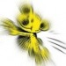 |
{kind=link}
| 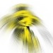 |
{kind=link}